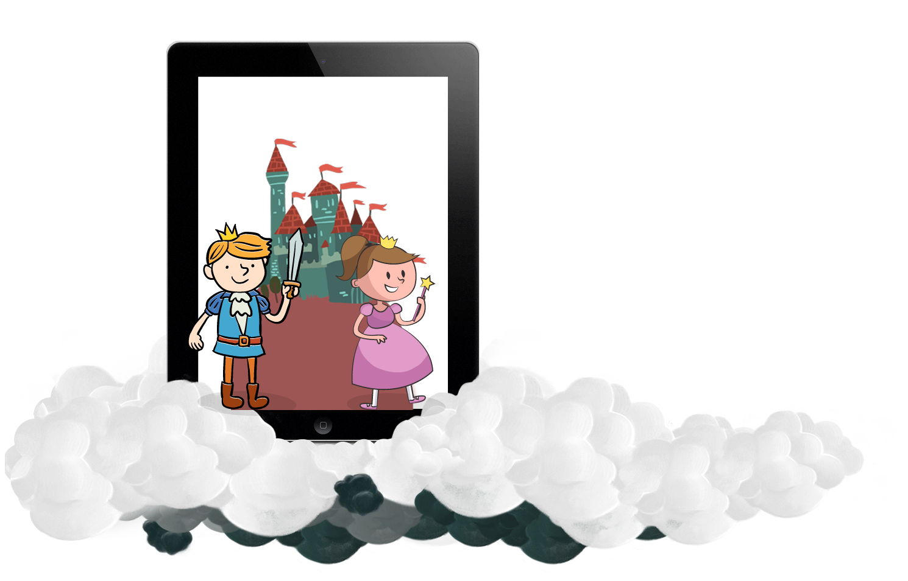

ROHNIN
THE CAT WHO WOULD BE A KING
THE STORY WITH A GRUMPY OLD CAT
" Babel is a grumpy old cat and not very bright at all! "… So begins the fantastic story of a cat that develops a pathological jealousy of the clouds and who spends his days annoying them.
Fascinating and entertaining story, Babel is a book specially developed for a very young audience from 2 to 8 years old. The elaborate and colorful universe and the numerous interactions will allow the children to interact with the characters in a unique way.
Discover another aspect of story-telling by following Babel in a captivating adventure that will perhaps make him the king he always wanted to be.
BABEL’S ADVANTAGES
The story and visual world of Babel were exclusively created for a very young audience from 2 up to 8 years old;
Exclusive high quality illustrations;
Exclusive music and sound effects;
Ease of playability;
Numerous interactions (blow, pull, push,…) and help display;
Text fully dubbed in English and French;
2 reading modes: "I read by myself" or "Read it to me";
FEATURES
20 fully illustrated and animated pages;
Available languages: English, French;
Compatibility: iPad 1, iPad 2, The new iPad, Android tablets;
Settings: music control, help display, languages and choice of subtitles;
MEET THE AUTHORS
Krim Maaloul was born in the southern suburbs of Tunis.
He spent his childhood surrounded by sheep blocking the streets,
and goat thieving flowers from gardens. Local wildlife quickly became
an inexhaustible source of inspiration.
Later, he studied illustration and comics in Brussels.
After two publications: Elephant's Memory (published by
Les éditions du Pépin) and The story of the day and night
(published by Lo Pais d'enfance), he turned to the enigmatic
world of computers and the Internet.
Later, he studied illustration and comics in Brussels. After two publications:
Elephant's Memory (published by Les éditions du Pépin) and The story of the day and night
(published by Lo Pais d'enfance), he turned to the enigmatic world of computers and the Internet.
In 2009, he became one of the co-founders of Epic, a Belgian creative agency specializing in the creation
of digital content and where he is now in charge of design and flash development.
For Babel, he uses the various skills acquired throughout his career. He creates a
fascinating and educational story which will entertain the younger children and captivate the older.